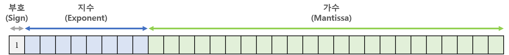

보수
부호가 있는 숫자를 다룰때 컴퓨터가 음수로 표현 할때 쓰는 방법 즉 부호가 없는 숫자를 다룰때는 노상관
- 예를들어
-3이란 숫자 컴퓨터에서 표현 하고 싶다라고 칠때, 예를들어997의1000에 대한 보수는3이라고 표현 하는것이다 - 그니까
1000의 기준에서 997은 3이 모자란 것이다 - 컴퓨터는 음수를 표현할 때 기준 점이 되는 수가 있으면 얼만큼 부족한지를 계산 함으로 음수를 표현 할 수 있게 되는 것이다
- 그리고 맨 앞비트를
부호를 나타내는 비트로 사용하여 0이면양수, 1이면음수이렇게 구분하게 되어0이면 양수니까 보수를 사용하지 않고 해석하고1이면 음수니까 보수를 사용하여 해석할지를 결정한다
- 바이트로(8비트) 예를 들자면 1바이트에서 부호가 없는 숫자를 다루면
2^8-1=0~255까지 인데- 앞에 1비트를 부호를 나타내는걸로 사용하여
-128~127까지 표현 하도록 설계 하였다
- 앞에 1비트를 부호를 나타내는걸로 사용하여
1의 보수
보수의 개념을 이용하여 음수를 표현하는 방법
- ex)
0100- 이때 기준값은: 2^비트수-1 =
15 - 현재 표현 하고 싶은 음수는
-4인 상황4를 2진법으로 변환해서0100이 된것 0100의 모든 비트를 반전 =101110진법으로11- 즉 15 기준값이 되기 위해서는 4가 더 필요하다 이렇게 해석이 된다
11의15에대한 보수는4이다. 라고 표현하여 음수를 구하는 것
- 이때 기준값은: 2^비트수-1 =
- 결과적으로 주어진 모든 비트를 반전시키면 1의 보수임
- 이때 맨 앞 비트는 부호비트 이기 때문에 가능 범위는
-7까지
2의 보수
실제 컴퓨터에서 음수를 표현하기 위한 방법
- 1의 보수의 문제가
0을 보수를 사용하지 않는 양수에서 표현하면0000인데- 보수를 사용하는 음수에서
0을 표현하면1111이다 - 즉 0의 표현이
양수0과음수0이 존재하게 되어 값이 낭비가 된다
- 2의 보수는 1의 보수값의 1을 더하여 문제를 해결한다
0000의 1의 보수1111에 +1 을 하게되면 모든 비트가 자리 올림이 일어나서0000이 된다- 이렇게 되면 음수와, 양수 모두
0000이 되게 된다
- 이렇게 되면서 4비트 에서
-8을 표현 할 수 있게 되었다- 8 =
1000 - 1의 보수에서는
0111부호비트가 양수가 되어버려 표현이 불가 - 2의 보수에서는
1000으로 부호비트가 음수로 표현되어 가능하다
- 8 =
- 4비트에서 양수8은 표현이 안되서 범위는
-8 ~ 7까지이다- 사실
1000을 양수8을 포함시키면 저장 가능한 수의 개수는 똑같은데 걍0이 두개 있는게 맘에 안들었나 보다
- 사실
구하는 법
- 모든 비트를 반전 (1의 보수를 구하는것임)
0110 0001→1001 1110
- +1
1001 1110→1001 1111
오버플로우 / 언더플로우
오버 플로우- 예를들어 signed 4비트에서 10을 표현하려고 한다
10=1010- 이때 부호비트가 1이 되므로 컴퓨터는 음수로 판단하여 2의 보수로 해석한 값
-6이 나오게 된다 - 즉 signed
4비트에서 표현가능한 양수 범위는7까지 인데 이를 넘어서 부호 비트가 1로 바뀌게 되어 컴퓨터는 음수로 판단하는 것 - 이것이 오버플로우 이다
- 예를들어 signed 4비트에서 10을 표현하려고 한다
언더 플로우:- 예를들어 signed 4비트에서
-10을 표현하려고 한다10=1010- 이걸 그대로 음수로 바꾸기 위해 2의 보수를 취한다면
0110즉6이 나오게 된다 - 한 비트만 추가되면
10을01010으로 표현하여 문제 없겠지만 - signed
4비트에서 표현가능한 음수 범위는-8인데 이를 넘어서서 부호 비트가 0으로 바뀌어서 컴퓨터가 양수로 취급 하는것 - 이것이 언더플로우 이다
- 예를들어 signed 4비트에서
부호화 절대치
부호를 제외한 수를 양수로 읽고
-를 붙이는 방법
- 예를들어
3을0011로 표기하고-3을1011로 표기하는 - 즉 부호비트만 1로 바꾸고 다른 비트는 양수와 동일하게 가져간다
문제점
- 사실 이렇게 그냥 부호비트만 다르게 하여 음수 양수를 구분하면 되는데 왜 보수를 사용하는지 의문이 들 수 있다
- 부호화 절대치의 제일 큰 문제는 연산에 있다. 3에 3을 빼는 연산을 한다면
컴퓨터는 뺄샘 연산을 음수로 변환하여 덧샘 연산을 한다
3+(-3)부호화 절대치로 표현하면0011+1011이 된다- 이를 계산한 결과는
1110즉-6이여서 전혀 다른 결과가 나온다
- 이를 2의 보수를 사용하여 계산하면
0011+1101= 0000- 즉 원하는 데로 0 이 나오게 된다
정수
2의 보수법으로 2진수를 음수로 바꾸기
주어진 2진수:
1000 0001
- 모든 비트 반전
0111 1110
- 반전된 2진수의 +1 하기
0111 1111
- 만약 반전된 2진수의 부호 비트가 0인경우 1로 바꾸기
1111 1111
- 10진수로 바꾼 결과 값 에다 부호만
-붙이기-127
결과
- 129 → -127
- 129는 8비트에서 표현가능한 음수 범위를 초과 하여 -127로 표현된다
- 그니까 사실 언더플로우 이다
- 참고로 128 에 경우 2진수로 바꾸면
1000 0000이 되는데 이걸 2의 보수를 취해도 자리올림 때문에1000 000임- 그래서 음수로
0으로 해석되는데 2의 보수표현법으로 -128을 표현한다
부호가 있는 2진법을 10진법 으로 해석하기
주어진 2진수를 부호있는 2진법 (2의 보수법) 으로 해석하기 부호있을때 2진수를 10진수로 바꾸는
부호비트가 음수(맨앞 비트가1)인 경우
이때는 2의 보수법을 사용하여 해석해야함 주어진 2진수:
1001 1110
- 모든 비트 반전
0110 0001
- 반전된 2진수의 +1 하기
0110 0010
- 해당 수를 그대로 10진수로 변경하고
-붙임-98
결과
- unsigned 일때:
158 - signed 일때:
-98
부호 비트가 양수(맨앞 비트가0)인 경우
이때는 원래 2진수 바꾸던 데로 해석하면 됨 주어진 2진수:
0111 1111
- =
127
결과
- unsigned 일때:
127 - signed 일때:
127
결론
- 부호비트가 0인 경우에는 그냥 2진수로 변환 하면됨
- 하지만 1인 경우 2의 보수 사용
- 바이트로 설명하자면
0~127까지는unsigned와 같지만128부터는 부호비트가1이되므로 2의 보수로 해석
10진수 음수를 2진수로변환
주어진 수:
-98
- 절대값을 2진수로 변환 (1바이트 표기법 씀)
0110 0010
- 모든 비트 반전
1001 1101
- 반전된 2진수의 +1 하기
1001 1110
- 부호비트 1로
1001 1110
결과
- -98 →
1001 1110
부동 소수
-
소수를 2진수로 (저장할 소수:
13.625)- 13 을 2진수로 (
1101) - 정수 부분을 때고
0.625만 남긴다. - 정수 부분이 1로 떨어지거, 똑같은 숫자가 나올때 까지 2를 곱한다. 이때 정수부분은 버리고 계산한다 계산 하면서 나온 정수값에 순서가 소수에 2진수 이다
101 - 13을 2진수로 계산한
1101과 소수 부분을 계산 하면서 나온 값101을 합쳐1101.101이라는 결과를 얻게 된다
- 13 을 2진수로 (
-
부동 소수 저장

1101.101을 정수 부분 하나만 남긴 체 소수로 이동1.101101소수점을 3번 옮겼으니 지수는2^3가수부분 왼쪽에서 부터 소수부분101101입력 (나머지는 0으로)지수부분에 지수 + 127(8비트) 한 수를 2진수로 입력10000010(즉, 아까 구한 지수가 2^3 이니까 3+127 = 130 = 10000010)
진법정리
2진법 (Binry)
Bin 접두어:
0b
- 컴퓨터의 텍스트를 모든것은 2진법 이다. 모든 길은 2진법을 통한다
8진법 (Octal)
Oct 접두어: 0
- 예전에는 많이 쓰였지만 지금은 잘 쓰이지 않음
- Unix 쪽에서는 파일권한 같은걸 8진법으로 사용하는듯
변환법
- 10진법 → 8 진법
- 2진법이 2로 계속 나누듯이 8진법은 8로 계속 나누면됨
88→227
- 8진법 → 10진법
- ex) 1 x (8^2) + 2 x (8^1) + 7 = 87
- 오른쪽에서 부터
(8^0) x a + (8^1) x a +(8^2) x a...
- 8진법 ←> 2진법
- 16진법이 4비트씩 이라면 8진법은 3비트씩 끊으면 됨
72←>111 010
16 진법 (hexadecimal)
Hex 접두어:
0x
- Binry를 1바이트 단위로 나타내기가 편하다
- 색상 값 같은 걸 표기할 때 많이 쓴다
- 보통의 바이너리 뷰어는 16진법으로 변환하여 보여준다
변환법
- 바이트 → 16진법
1110 1100→ 0xEC
- 16진법 → 바이트
- E가 14니까 2진수로 변환 하면 →
1110 - C가 12니까 2진수로 변환 하면 →
1100 - 이렇게 4비트씩 끊어서 처리할 수 있으니까 2진법으로 바꾸기 편하다
- E가 14니까 2진수로 변환 하면 →
- 16진법 → 10진법
- ex) 2FA
- 2x(16^2) + 15x(16^1) + 10 = 762
- 오른쪽에서 부터
(16^0) x a + (16^1) x a +(16^2) x a...
- 16진법 → 10진법
- 2진법이 2로 계속 나누듯이 16진법은 16로 계속 나누면 되긴 하는데
- 차라리 2진법 으로 변환하서 계산하는게 편할듯
표기법
10: A11: B12: C13: D14: E15: F